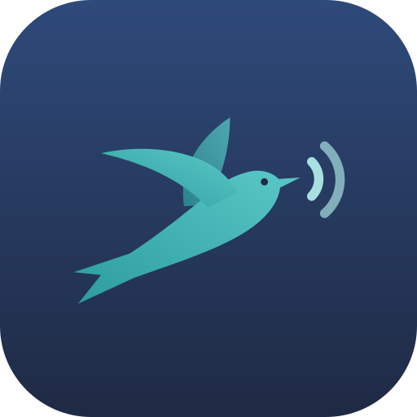

A message arrives, a field is edited, a file is dropped in a chat: your program on your own computer runs straight away. No cloud server, no public web address.
Someone sends the bot a bank statement. Your script imports it and replies "42 lines imported".
"Approve" ticked on a Base row. Your program makes the PDF and sends it.
A customer list is edited. Your server updates its own copy at once, no more checking every few minutes.